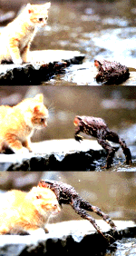
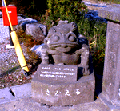
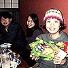

|
 カエルジャンプでネコを圧倒！【福岡発=天神蜂の女性様】ダンナがどっかから取ってきたデスクトップピクチャーです。どっから取ったか忘れたらしいです(笑)。でも！なんとネコが負けてます！感動したので送ってしまいます。
カエル、哺乳類も制圧し怒涛の進撃！【全国かえる奉賛会】肉食獣の猛獣の一種であるネコは、これまでカエルよりも強いとされていたが、この画像を見る限りは、その定説は打ち破られたといっていい。個体の小ささをあなどっていたネコも、カエルの意表を突く大ジャンプにびっくり仰天して慌てふためいている様が鮮明にうつっているのであるーっこれでもう、獰猛な肉食系哺乳類もカエルの敵ではないぞーっ。これからは、この跳躍力にものを言わせて、不況でクラブチームを手放すバレーチームや、スキーの大ジャンプチームには、カエルを選手登録して相手を圧倒することも可能になったあああ。
ところで、この壁紙はいったいどこから入手したのであろうかあああ。どなたか情報を待つ！！
 青の洞門付近でカエルを発見！【大分発だいちゃん同志記者】自転車で山国川にかかる石橋を渡ろうとしていたときのことです。橋のたもとに、カエルが座っているではありませんか。背中に２匹の子どもカエルを載せた親子タイプで、このカエルに手を合わせると、子孫が代々栄えるということでした。現場は、青の洞門で知られる風景も絶景な場所で、カエル様も満足そうでした。通常の親子カエルと違う点は、子どもカエルがじっとしていないで、あっちやらこっちやら、好き勝手な方角に向いて座っていたということでしょうか。

カエル寝間着まくら付き！報道２日で完売！【全国かえる奉賛会】１１月１８日号で紹介した、共同購入の「カエル寝間着まくら付き！」企画は、カエル新聞の縫合直後からカエラーの注文が殺到し、２日で完売してしまいました。
在庫をかかえて苦しそうな、かえる製品を発見した場合は、全国のカエラーが一致してカエル商品を支持し、購入することで、カエル商品の開発にあたる偉大な職人や販売店を支援し、カエル商品がどんどん生産されるようにしましょー。 「けろけろコミック」サイン本！【東京発JUN-Z同志記者】かえるの日、「けろけろ」でおなじみの矢島さらさんの本「けろけろコミック」がついに発売になりました。で、jumpingfrogのサイトで、矢島さんのサイン本の通販をはじめました。
【全国かえる奉賛会】大王も購入した「けろけろコミック」。カエル画像爆発の素晴らしいカエル本だあああ。なんと、矢島さんのサイン入りとは！あの着ぐるみを着て斎戒沐浴した後にサインしてくれたのであろうかああ。
カエルサボテンがテレビに！【福岡発モロー寺井師同志記者】ごぶさたしております。モロー寺井です。ところで福岡はＲＫＢテレビ１１月２５日土曜２５：４５放送「チャートバスターズＲ！」にて、画面にかえるサボテン登場！みなさま遅い時間ですがぜひ御覧ください！ほんとうはカエル番組ではないのですが、一部カエラーからの熱烈な提案をいただき、さりげなく目立つように、カエルサボテンを配置してみた！というわけです。 一般紙記者がカエル化、カエル謎究明へ！【福岡発太田記者様】カエル新聞創刊以来の『３大カエル謎』のひとつであった、『カエル水飲み場全国点在の謎』=平成12年8月20日号などで紹介=に、このほど、専属記者を配置して謎の解明にあたることにしましたああ。
太田カエル問題専属記者に激励を！【全国かえる奉賛会】かえる新聞の永年の謎であった、『カエル水飲み場全国点在の謎』。『あのーわたくし、かえる新聞をやっているげこげこ大王７世というものですが、いえ、決してあやしいものではありません。かえるニュースだけを追っているので、行政の不正とかをただしたりするわけではないので、別に気軽に取材を受けて下さい』と、行政取材に対してはなにかと困難が多かった、大王も、非カエル系新聞の支援を受けて謎が解明されるかと思うと、うれしくなるのであるー。
カエラーのみなさん！果敢にもカエル世界を取材せんとする太田記者に激励のメールを届けましょう！取材部門の共有メールなので、宛先にカエルネタ追跡の太田記者様、と朱書したほうがいいかな(笑)太田記者様
 カエルショップ１号店よさらば！【福岡発げこげこ大王７世直筆】全国発のカエルグッズ専門のショップとして、カエ文化普及のために献身してきた、福岡市中央区大名のカエルショップが、１１月初旬で閉店した。
待ち合わせに、新製品のカエルグッズの調達に、福岡かえる展会場隣接地として、とってもとっても馴染みが深かったので、閉店はかなりさみしいけど、店長いままでカエラーに多大な夢をありがとうございました。みんなで送別会しましたあ。遅くなったけど報告です。
投稿採用者に武功カエル徽章を授与！ |
かえる古新聞過去に取り上げた記事を見出し付きで一覧したい人は、ここをクリック◆創刊号を見る◆先週号を見る◆話題の号を見る◆かえる新聞の昔を読む◆COOL NET FROG RANKING !
|
私も入っています。。全国かえる奉賛会
大王様に会うには、このバナーをクリック。ずっと奥に写真館があるぞ。全国かえる奉賛会に入会するには、自分のホームページのどこかに、下の部分を追加するとバナーがリンク付きで表示されるぞ。どんどん入会しましょー |


|